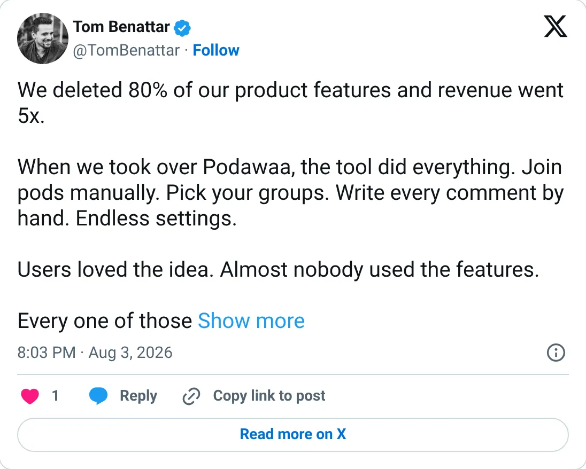
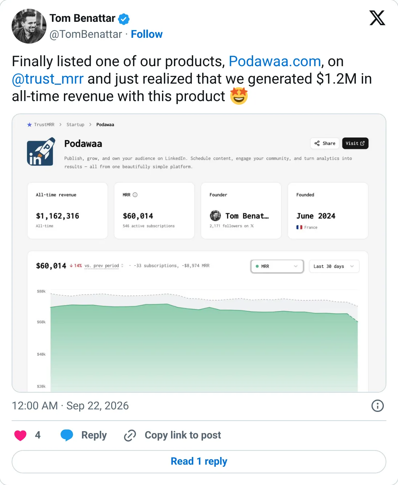

Don't build this
Podawaa
The ledger looks real. It is not one of the clearer things to start next.
$66,063 MRR
Should you build this
Podawaa sells LinkedIn engagement pods, scheduling, and analytics, at $66k MRR on Stripe, 616 subscriptions. The cash is real. The product depends on LinkedIn continuing to tolerate pods. That is a platform bet, not a thing to clone. If LinkedIn turns the dial, the MRR leaves with it.
Cited from the captured posts, shown below: the earliest captured post (Aug 3, 2026); the latest milestone (Sep 22, 2026) is the source for “Listed on TrustMRR: $1.2M all-time revenue”.
Posts this is based on

Open on X

Listed on TrustMRR: $1.2M all-time revenue
Open on X
What the product is
LinkedIn growth tool: engagement pods, scheduling and analytics. Co-owned with Waalaxy (49%).